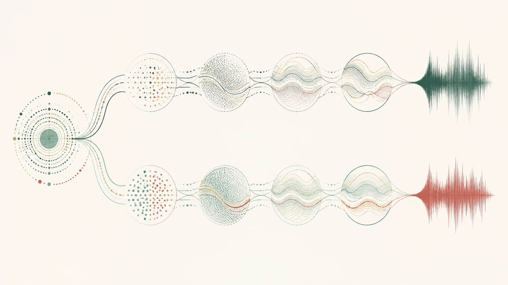

部分核實版權限制
曲目
《鷓鴣飛》
已核實L2 · 已核實摘要4 個去重來源8 項核對紀錄
8 項已記錄核對的陳述 · 832 字正文
本頁達到站內正文門檻，並附核對來源。層級反映資料覆蓋，不等於外部專家認證；引用前請核對原文。 來源數依站內規則去重，尚未逐一追查相互引用的依賴關係。
已核實內容
1 篇專題
相關來源
4 筆
學位論文 · 2014-06-23
The dizi (Chinese bamboo flute) its representative repertoires in the years from 1949 to 1985
Chang-ning Chai
歷史與文化地域與流派曲目、作曲及演奏實踐指法與演奏技法
已核實開放取用
部分核實版權限制
部分核實版權限制
本篇視覺示意（非教學圖）
